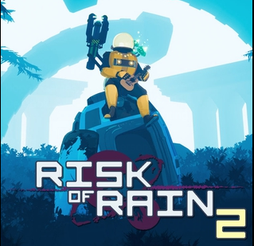

About Me (Click to reveal)
Who I Am
Hello, I am William Steele, a gamer and programmer. I am a student a Fort Hays State University studying Computer Science. I have also started a Twitch channel and a Youtube channel but I have not been supe active on them. I am hoping to become a bigger streamer/youtube though right now I am too nervous to stream without a friend also playing with me..
My Interests
My interests include gaming, programming, traveling, and doing things with friends. My interest in games include several genres as I like to play games such as Stellaris, Risk of Rain 2, Helldivers, Rimworld, Halo and Shovel Knight which has a variety of different game types. My interest in programming also fall back to gaming, I was interested in how gaming worked and looked into it and it seemed interesting. It is something I am wanting to try myself when I have more time to work on things. I also love traveling, I have been to 48 of the 50 US states only having Oregon and Hawaii left to visit. I have also visited a few countries including Canada, China (Before Covid), Argentina, and Iceland.
My plans
My current plans are to of course finish college and find a job. But after that, I am wanting to expand upon my Twitch and Youtube career as well as start designing my own games. I also want to travel but I will hold back on that until farther in the future.
Favorite Games

Risk of Rain 2 (Click to cycle through)
My Links
These are pretty empty, but I am planning on adding things over time.